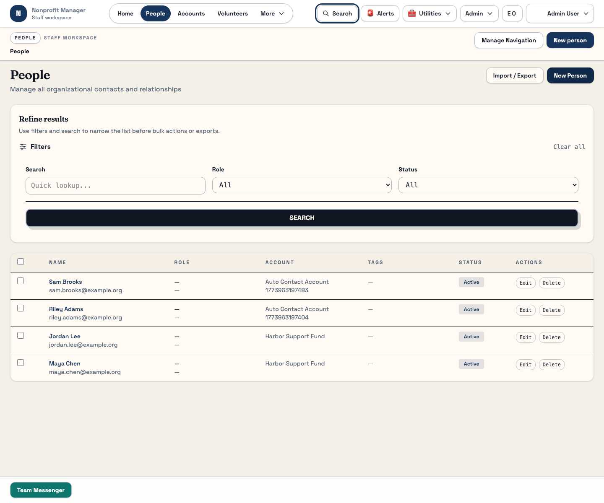

Workspace Basics
Understand the patterns shared across staff pages
Most staff pages follow the same rhythm: open a list, search or filter, choose a detail page, then edit or confirm an action. Learn those patterns once and every stable module becomes easier to use.
What this page is for
Use this guide any time you need to understand how stable staff pages behave in general. It covers navigation, search, filters, list/detail/edit flow, status badges, empty states, confirmations, and exports.
Before you start
- Sign in to the staff workspace and open at least one stable list page such as People or Donations.
- Expect filters to behave slightly differently by module, but with the same overall pattern.
- Keep in mind that some pages store filters in the URL, and some also remember them in your browser.
Steps
- Use the navigation labels literally. Staff routes are organized around clear labels such as People, Events, Donations, Reports, and Scheduled Reports. If you are unsure where a task belongs, start from the closest label instead of guessing.
- Search before you create. On list pages, start with the search box and then apply filters such as role, status, payment state, or category.
- Apply and clear filters deliberately. Some pages update the URL or remember the last filters you used. If a list looks too small, clear filters before assuming records are missing.
- Open detail pages from linked rows. Names and primary identifiers usually open a detail page where you can view tabs, edit records, or perform related actions.
- Read confirmations carefully. Destructive actions such as delete often require a confirmation dialog. Stop and verify the record count or record name before approving the action.
- Use badges and empty states as clues. Status badges, warning text, and empty-state messages often explain whether you are seeing a real issue or just a filter combination with no results.
- Use exports where available. If a list or report offers import/export, treat exported files as snapshots of the current filters or report definition.

Tip: If a page feels blank, first clear the filters, then refresh the data before you report a missing-record issue.
What happens next
Once you recognize these shared patterns, you can learn new staff modules much faster. The next step is to apply the same rhythm inside People, Volunteers, Events, Donations, or Reports.
Common mistakes
- Assuming no search results means data was deleted.
- Forgetting that a list can stay filtered after you navigate away and return.
- Using bulk actions when you still have an old selection active.
- Approving a confirmation dialog before reading which records it affects.
Related guides
Need help?
When you report a workspace issue, say whether it happened on a list page, detail page, or confirmation dialog. That short detail makes troubleshooting much faster and usually reveals whether the problem is a filter issue, a permissions issue, or a genuine bug.